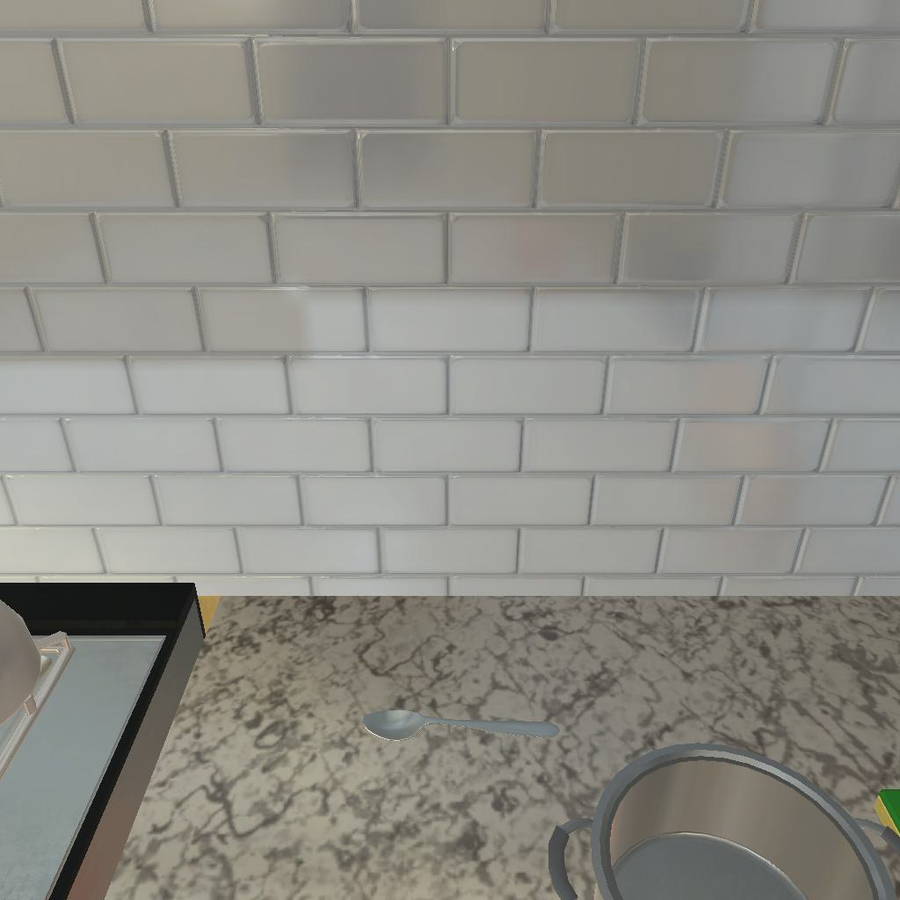
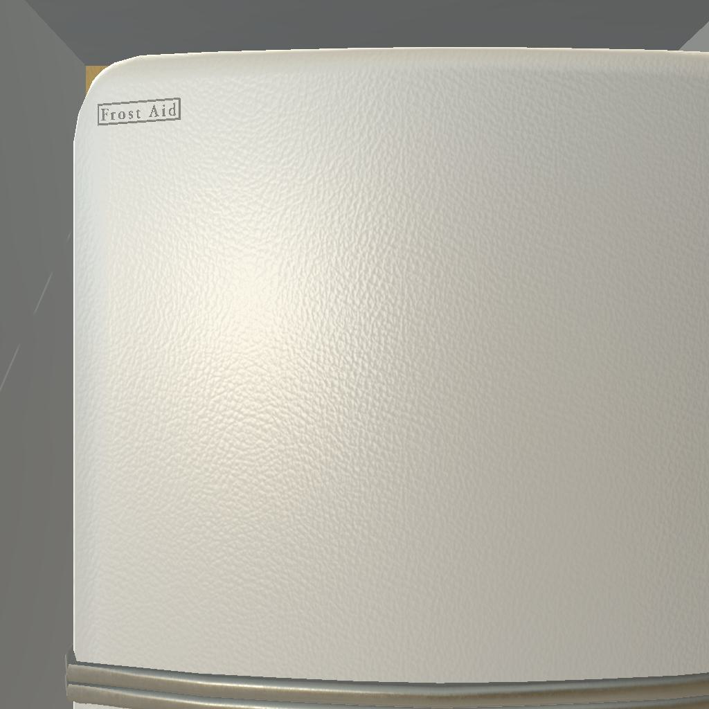

---------------------------------------------------------task: 16---------------------------------------------------------
--------------------------------------------------------------------------------------------------------------------------------------------------------------------
--------------------------------------------------------------------------------------------------------------------------------------------------------------------
Step:--------------------------------------------------------------------------4-------------------------------------------------------------------------------
----------------------------------------
VLM Prompt:
Image1:
Image2:
Image3:
**Instruction**
1. Analyze the provided images to identify all visible household objects and compare the difference between images (e.h. whether the object is opened or not and taken on hand or not), focusing on those relevant to the task description "put a cool pan in sinkbasin."
2. Use the analysis of images and the task hint "The agent must find an object of the desired type, pick it up, go to a fridge, cool the object with the fridge, then find the correct location to place it, and put it down there. The agent does not need to use the fridge button or open the fridge to cool the object, and the agent just needs to do action that is "cool the object with the fridge"." to answer the question: what is the most reasonable action in the choices for the task description "put a cool pan in sinkbasin"?
3. Decide and write the answer using the template: The answer is: (i): , where i is the real number. If there is no desired object in images, search every place based on **Initial Observation** to find the object. And if no one is exactly correct, choose a similar answer.
**Initial Observation**
You are in the middle of a room. Looking quickly around you, you can see cabinet (1-9), countertop (1-3), drawer (1-9), stoveburner (1-4), microwave (1), sink (1), fridge (1), toaster (1), coffeemachine (1), sinkbasin (1), shelf (1-3), garbagecan (1)
**Answer Choices**
(1): go to cabinet 1
(2): go to countertop 1
(3): go to cabinet 2
(4): go to drawer 1
(5): go to drawer 2
(6): go to drawer 3
(7): go to drawer 4
(8): go to stoveburner 1
(9): go to drawer 5
(10): go to stoveburner 2
(11): go to stoveburner 3
(12): go to stoveburner 4
(13): go to cabinet 3
(14): go to cabinet 4
(15): go to microwave 1
(16): go to cabinet 5
(17): go to cabinet 6
(18): go to cabinet 7
(19): go to sink 1
(20): go to toaster 1
(21): go to coffeemachine 1
(22): go to cabinet 8
(23): go to drawer 6
(24): go to drawer 7
(25): go to drawer 8
(26): go to sinkbasin 1
(27): go to shelf 1
(28): go to shelf 2
(29): go to countertop 3
(30): go to shelf 3
(31): go to drawer 9
(32): go to cabinet 9
(33): go to garbagecan 1
(34): open fridge 1
(35): close fridge 1
(36): examine fridge 1
**Answer**
Let's think step by step by following the instructions.
----------------------------------------
----------------------------------------
Original Response:
Image Analysis:
- Image1 shows a stove with two kettles on top, one pan on the countertop, and a salt shaker. The stove has four burners, which means we can identify stoveburner 1, 2, 3, and 4. The pan is on countertop 1. The oven below the stove is closed, and it is not relevant to the task.
- Image2 depicts a close-up of the countertop with a spoon and part of a pot visible. This could be countertop 2 or 3, but it is difficult to determine the exact location without further context.
- Image3 shows a closed fridge with the brand "Frost Aid." The fridge is not opened, and there is no interaction with it in the image.
Task Analysis:
The task is to "put a cool pan in sinkbasin." To complete this task, the agent must first locate a pan, cool it with the fridge, and then place it in the sinkbasin.
Based on the images, we can see a pan on countertop 1 in Image1. According to the task hint, the agent does not need to use the fridge button or open the fridge to cool the object, so no interaction with the fridge is required beyond the "cool the object with the fridge" action. After cooling the pan, the agent needs to find the sinkbasin to place the cool pan in it.
From the Initial Observation, we know there is only one sinkbasin, so we do not need to search for it.
Considering all the given information and the task at hand, the most reasonable action would be to go to the pan on countertop 1, perform the "cool the object with the fridge" action (which is not explicitly listed in the choices), and then go to sinkbasin 1 to complete the task. However, since we must select from the given answer choices and the action of cooling the pan with the fridge is not an option, the first step is to go to the location of the pan.
The answer is: (2): go to countertop 1
----------------------------------------
----------------------------------------
>>> Refine Original VLM Response and Get Pure Action: go to countertop 1
----------------------------------------
-----------------------------------------------------------------
Running time: 24.18767547607422 seconds
Total Money: 9.234290000000005
-----------------------------------------------------------------
-----------------------------------------------------------------
Text Observation:You arrive at loc 1. On the countertop 1, you see a pan 1, a bread 1, a tomato 1, a spoon 1, a butterknife 1, a saltshaker 1, and a cup 1.
-----------------------------------------------------------------
UNSUCCEED